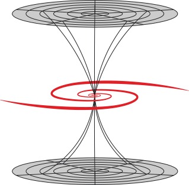
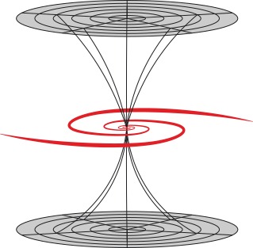

Science 
Science 
I want to make researching of things that we study before. I have a small base of knowledge and I may think without any borders. I start to work about thousand task – Navier Stokes. I want to solve this task and use it in business.
I really think about science like something that we create for create something more. But it’s only thoughts and I really want to study science practically in most part of all. I want to study space and try to combine neuron physics and Artificial Intelligence.
I want to make future from nothing. From start and show other the ways that we can’t see under the walls that build from other science workers. I want to write more theories and prove that I already start. My science may be really amazing and I want build business on science and art.
I always combine art and science because it’s better together. I really can’t seen what I may do for science because I have really strange vision of all science doings. I really can’t see value of most research bases. But I try to do it and sometimes I really read interesting research from USA, Great Britain and Germany.
Science for me like passion from young years and I have dream to change way of study and make breakthrough in all disciplines that I’m interested.